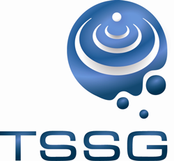

Table of Contents
|  |
Research Group: Telecommunications Software and Systems Group (TSSG)
Address: Waterford Institute of Technology, West Campus, Carriganore, Waterford, Ireland
Author(s): Brendan O’Farrell
Email List: bofarrell@tssg.org
Rev Date: July 03, 2012
Rev Number: N/A
Date: July 03, 2012
Copyright: © Waterford Institute of Technology
What are the markets for WebRTC